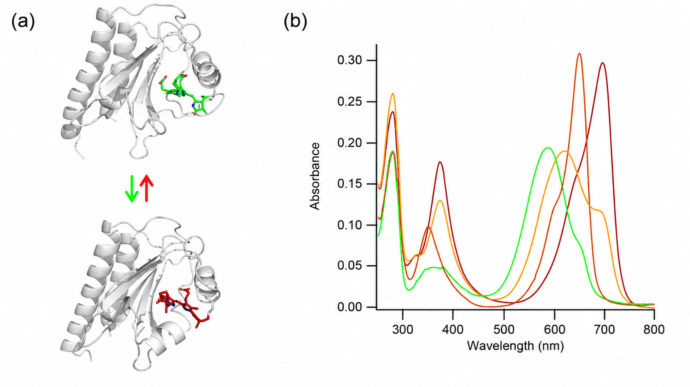
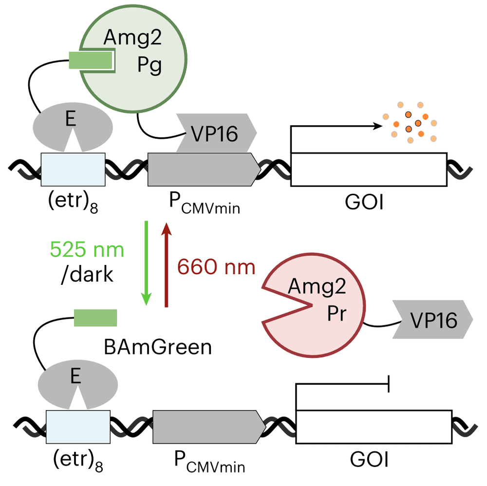
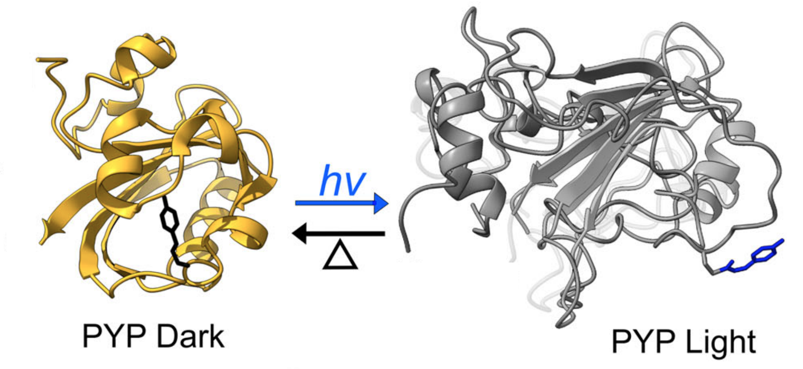
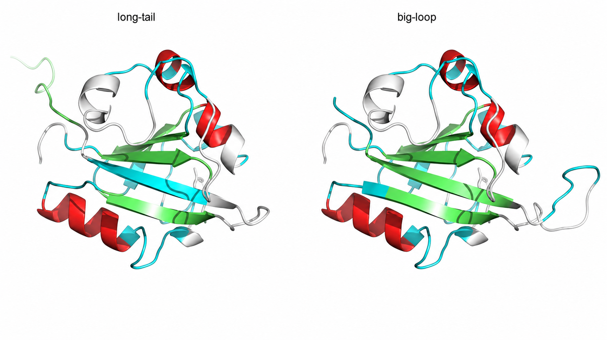
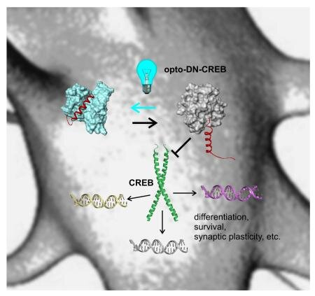
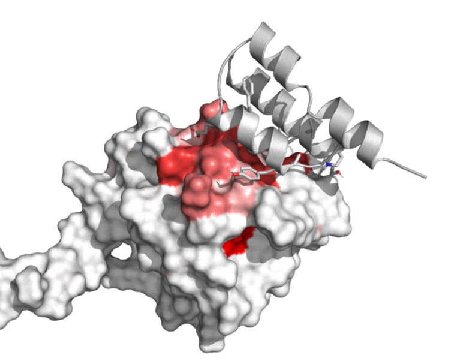
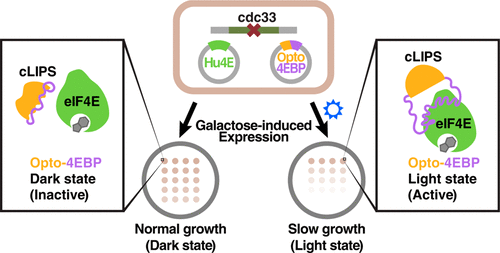

Light-switchable protein engineering
We engineer photoswitchable proteins — cyanobacteriochrome (GAF), PYP, and LOV domains — into optogenetic tools that respond to colors of light from UV to far-red.
GAF protein engineering
GAF-only domains, or cyanobacteriochromes, offer a spectacular array of photoswitchable domains responding to all colors of light from UV to far-red. They bind bilin pigments like PCB or biliverdin.
In a phage-display collaboration with the Uppalapati lab, we discovered selective binding partners for the green, orange, red, and far-red states of these CBCRs.

BICYCLs — bidirectional light-inducible dimers
BICYCLs are among the smallest optogenetic tools for controlling protein–protein interactions. Built from a single red/green cyanobacteriochrome GAF domain plus phage-display-derived binders, they come in two complementary flavours — BICYCL-Red (binds under green light, releases under red) and BICYCL-Green (the reverse) — with up to 800-fold selectivity between states.
Because they're driven by green and red light, BICYCLs multiplex cleanly with existing blue-light tools, and have been used to control protein subcellular localization and transcription in mammalian cells.

PYP engineering
PYP changes conformation upon blue-light irradiation, allowing the design of tools like BoPD. It is a remarkably malleable protein, and we have used it as a scaffold for a wide range of light-switchable designs.

A malleable scaffold
PYP tolerates dramatic redesign. We have made circular permutants, versions with loop insertions, and a version with a duplicated beta strand — including "long-tail" and "big-loop" variants that remain folded and photoactive.
Duplicating a single beta strand even creates a light-switchable metamorphic protein.

Opto-DN-CREB
A PYP fusion to a dominant-negative CREB. In darkness the dominant negative remains distorted and inactive, letting CREB interact with endogenous promoters. Under blue light, PYP conformational changes activate the dominant negative to inhibit CREB-mediated transcription.
Testing progressed from in vitro work to cellular studies, then to mouse models — demonstrating spatiotemporal control of fear learning through light-regulated CREB activity.

BoPD — binder of PYP dark-state
Using phage display, we generated binders targeting both the light and dark conformations of PYP and LOV photoswitchable proteins. Phage display can generate binding partners for the different conformations of a photoswitchable protein even with no known partner and no structural information.

LOV protein engineering
LOV domains serve as photoswitchable units in optogenetic tool design. A yeast-based screening system let us identify LOV-based translation-initiation inhibitors.

Use our tools
Plasmids for many of these optogenetic tools are available through Addgene.
Woolley Lab on Addgene ↗